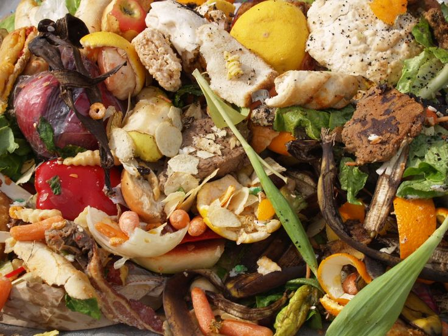

Save your money and the planet by reducing food waste

Food waste has significant environmental, economic, and social consequences...
Learn more about these issues and what you can do to help.
Create a shopping list and stick to it to avoid buying too much groceries.
Storing food in the freezer or food storage might help meats and other foods to keep it good.
Instead of wasting money on new foods,tried to eat leftovers so it help you with saving money.
Eating before expiration date it's the best to do for not wasting food.
Waste fruits & vegetables can be decompose as soil.It's good for growing plants.
Most popular food brands are throwing food away because no one buy it,Instead we should donate to the one who needs.